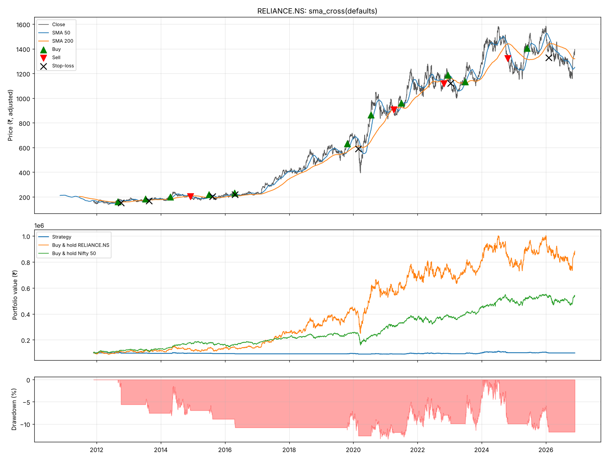
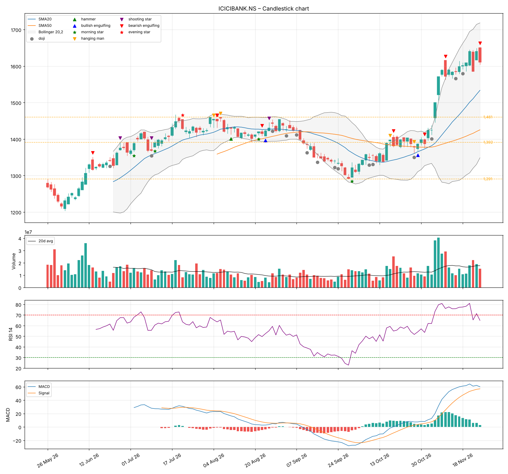
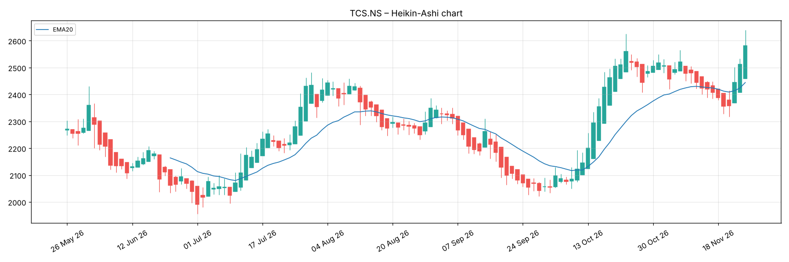
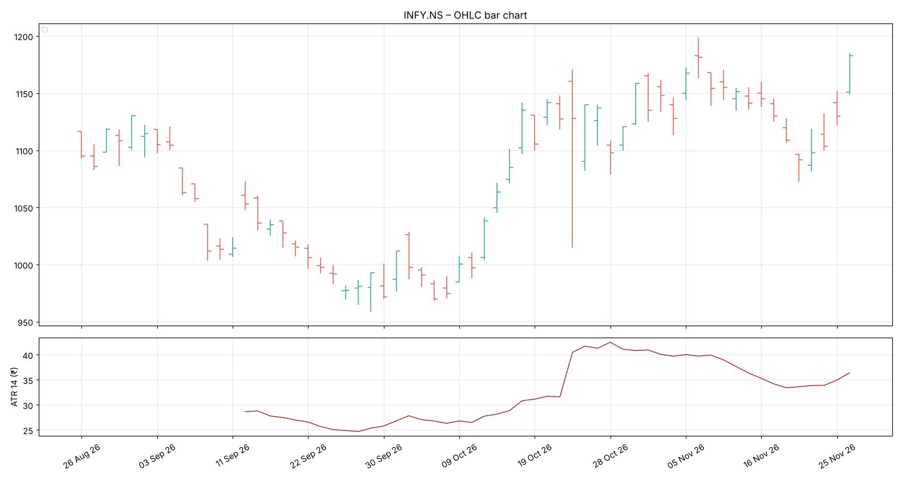
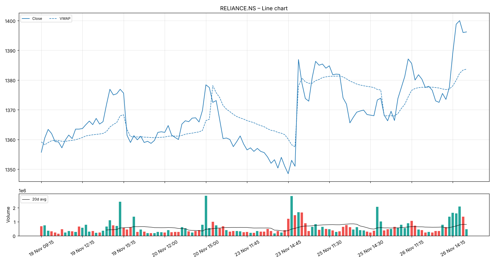
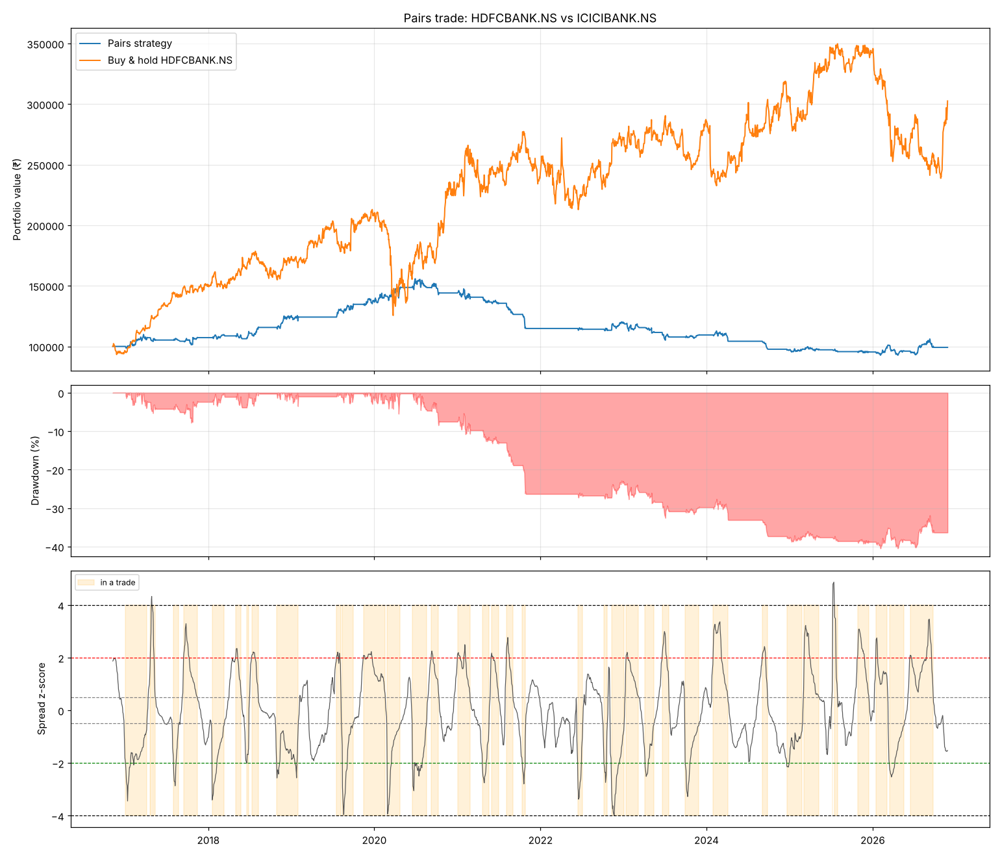
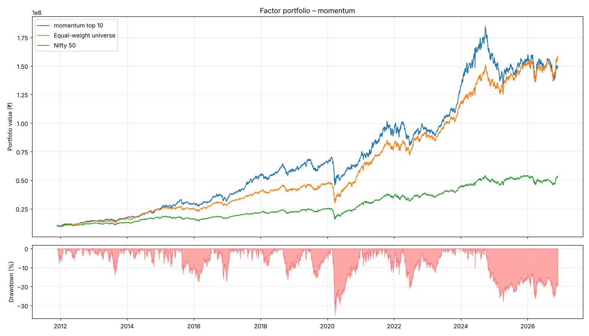
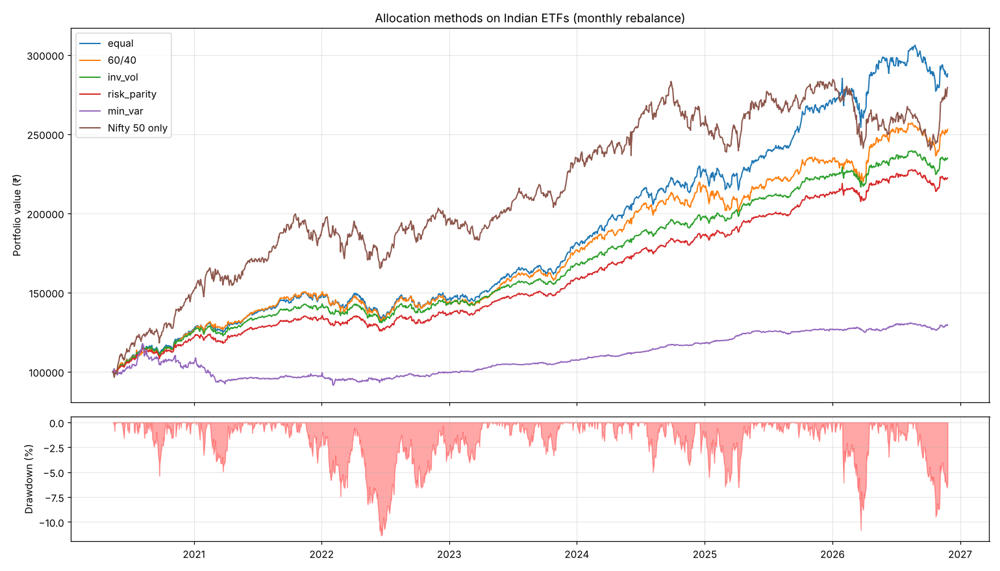

Charts
Sample outputs from the toolkit on real NSE data.

50/200 SMA crossover backtest – Reliance, 15 years
Candlesticks with patterns, S/R, RSI, MACD – ICICI Bank
Heikin-Ashi – TCS
OHLC bars with ATR – Infosys
Intraday line chart with VWAP – Reliance
Pairs trade – HDFC Bank vs ICICI Bank
Momentum factor portfolio vs Nifty
Allocation methods on Indian ETFsEducational only, not investment advice. SEBI found 87.7% of individual F&O traders lost money in FY26.